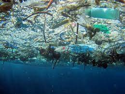
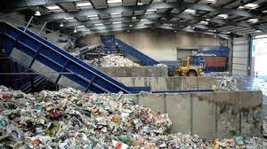
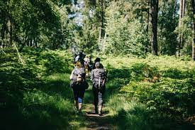

Actualité
4 actualités mise en avant par semaine !
Des scientifiques inventent un plastique "écologique", recyclable et capable de nourrir la mer

Quatre écoles du Var récompensés pour leurs actions en faveur de l'écologie
L'État veut accélérer le recyclage à l'approche des échéances de 2025

Vous balader en forêt vous expose désormais à une amende
